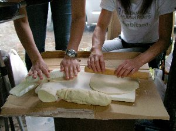
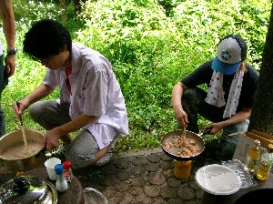

ダッチオーブンでピザ作り | 2006年7月 幹事：キッカー |
|---|---|
| 夏に皆で河原に集まれば、やることはBBQ(バーベキュー)ですよね。 鉄板や網で焼肉や、焼きそば、とうもろこし。 しかし、「しふとべる」がBBQやると言った時は、そんな当たり前の物は焼きません。 今回は「ダッチオーブンでピザを焼こう」です。 ダッチオーブンと言うと、今は説明が要らないくらいに出回っていて、ホームセンターでも売っています。 簡単に言うと、鋳鉄で作られている肉厚の鍋です。 ただし、本当のダッチオーブン（以下ＤＯ）とは、LOGGE社製の物を言うようです。 後は鋳鉄鍋とでも言うのかな？ さて、なぜＤＯが良いかと言うと、肉厚の鋳鉄が内部に均等に熱を回すため、オーブン代わりになるからです。（名前からしてオーブンですから） どんな料理も失敗少なく出来上がるって寸法です。 | |
 材料は目分量♪ |  さー、こねて、伸ばしましょう！ |
| 天気も余り良くない日曜日、総勢12名のメンバーは買出し組と、設営組に分かれて作業開始です。 私（べっしー）は買出し組だったので、詳細は不明ですが、雨をよける為に橋の下での設営を試みた設置組は、強風と雨で散々な目に合い、橋の下を撤収せざる負えなくなりました。 新たなBBQ場所は、ゴールデンウィーク時にも使用した近くの公園の東屋です。ちょっと狭いけど、トイレと水場が確保出来る、絶好の場所です。 狭いのがネックで、緊急避難用ですね。 ピザ製作開始。 ネットで探したレシピ通りに作るべく、皆で協力して生地を練ります。 砂糖を買い忘れた事に気が付き、どうしようかと考え、シュガーが持っていたコーヒー用の砂糖を、量が少ないのを承知で投入。 持っていたのが凄い。さすがシュガー！ 次に、粉の分量を間違えているのに気が付く。 今回は強力粉＋薄力粉のブレンドで生地を作る予定が、何処で伝達ミスが有ったのか、薄力粉＋薄力粉となってしまって、生地が固まりません。 仕方ない為、適当に強力粉を足していきます。（強力粉は買っては有りました） 因みに、軽量カップはあったけど秤は無い為、イースト8グラムとか書いてあっても分からず、目分量で入れました。 | |
 赤ワインの鶏肉煮込み（狩人風） |  皆さん協力して調理 |
| この時点でレシピは用を成さなくなり、「なんとかなるよ」と、いつもの「しふとべる」らしくなってきました。 それでも生地はちゃんとまとまり、発酵まで順調です。 発酵する時間を利用し、ゴンゾーラパスタや、リゾット、赤ワインの鶏肉煮込み（狩人風）を、新メンバーのサクラ料理長（勝手に任命）による指示の元、次々と作られていきます。 これまた、見たことが無い様な食べ物ばかりで、美味しい〜(*^。^*) 横では、キッカーが定番のスモークをやっていました。チーズとベーコンです。 サクラ料理長からは、バナナケーキの差し入れも有りました。 生地の発酵が順調だったので、生地を伸ばしに掛かります。 適当な大きさに分け、棒で円くなる様に伸ばします。 そして、その上にピザソースを塗り付け、具材を載せて行きます。 今日の具材は、キッカーがスモークしたベーコン、アスパラガス、トマト、小エビ（あれ、有ったと思うけど、食べた記憶が無い）、貝（何の貝か忘れました）、玉ねぎ、ピーマン等々。 生地が9枚分出来たので、生地ごと変わる様にトッピング。 | |
 スモーク中のチーズとベーコン |  出来上がり第一号 |
| 仕上げは、ピザ用のチーズをたっぷりと。 チーズも、通常のお徳用とモツァレラチーズを用意しました。 残念なのは公園なので直火が出来ず、炭を起こせない為、ＤＯの上から熱を加えることが出来ないことです。 肉厚の鉄に期待して、時間を掛けて焼くことにします。 ＤＯにアルミホイルを引き、くっ付き難いようにオリーブオイルを塗ってピザを載せます。 蓋をして待つこと20分位でしょうか、チーズが溶けて良い具合に焼けたピザが出来ました♪ 今回は、上から熱を掛けられない事を考慮して、あらかじめ具材を焼いて置いたのが正解の様です。 そして、一番初めの生地が一番薄く、パリッと焼けました。 アスパラガスなんか、柔らか〜くなって美味しい〜♪ 凄いじゃーん、適当な生地レシピでも、ちゃんと出来たよ！ 驚きのピザを、ハフハフと頬張りながら、次のピザを焼きに入ります。 そして食いすぎ。 ま、いつものパターンですけど、事前のパスタ、ケーキ、リゾットを食べ、さらにピザを食べているのですから、お腹一杯なのは当然です。 昼前から始めて、夕方まで食べ続け、時間を掛けてはいるが、量が半端ではないからね。 それでも、ピザ2枚分位お土産（残った）になった感じかな。 後は、食べちゃった♪ | |
 トマトとチーズをたっぷり♪ |  てんこ盛りの具を載せてみました |
| 《総括》 いやいや、以外にもいい加減な分量で生地は出来上がり、それなりに仕上がるものだと感じるピザ作りでした。 食べて美味しいしね。 次回は是非上からも炭で焼きたいな。 もっと、パリッと仕上がるのかしら？ 皆さん、雨にも負けず参加ありがとうー(^^)/~~~ 次回は何を作るのかな？ | |
| 写真＆コメント ｂｙ べっしー | |